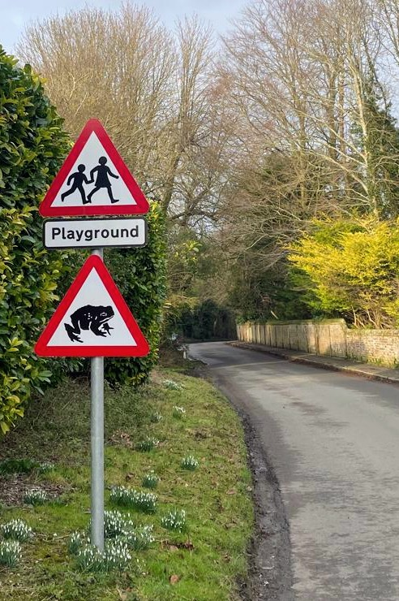
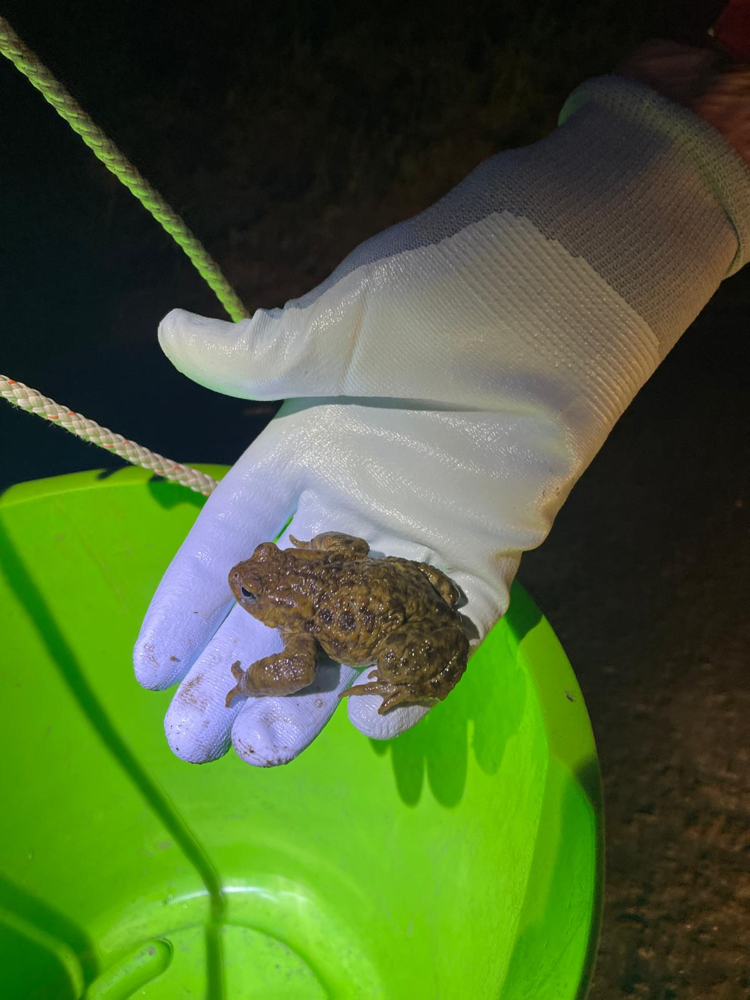
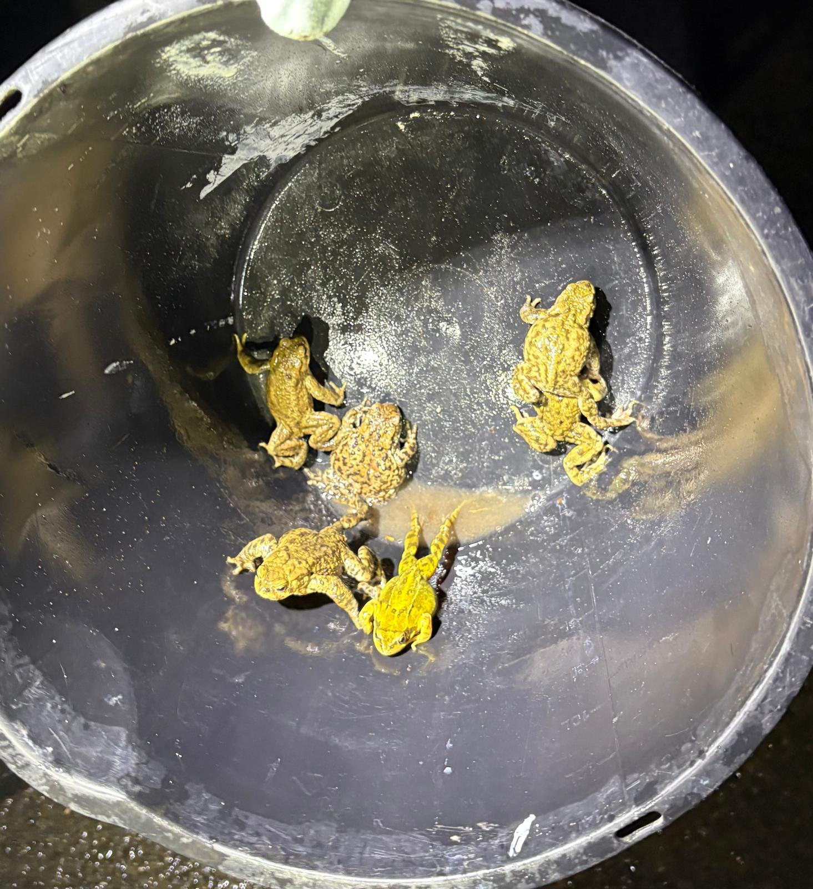

The Importance of Toad Patrols, Current Challenges, and the Role of Navigation in Bufo bufo
The Importance of Toad Patrols

Road mortality is recognised as one of the greatest threats to amphibian populations worldwide. During the breeding season, common toads (Bufo bufo) migrate from their terrestrial habitats to breeding ponds, often crossing roads that intersect these traditional migration routes. As a result, large numbers of toads are killed by vehicles each year. Even relatively low levels of mortality can have serious consequences for local populations because common toads are long-lived, reproduce relatively slowly and show strong fidelity to the same breeding ponds throughout their lives.
To help reduce these losses, volunteer conservation groups, known as toad patrols, monitor known migration routes, and transport toads safely across the road. In 2025, volunteers at Letcombe Brook safely assisted nearly 1,500 common toads across the road. These individuals contributed to a national total of 156,227 toads rescued, surpassing the 152,717 toads recorded in 2024. Such figures demonstrate both the scale of volunteer involvement and the substantial conservation value of coordinated amphibian rescue programmes.
A Major Challenge Facing Toad Patrols
Despite the success of the Letcombe Brook Toad Patrol in reducing road mortality, an important uncertainty remains. The precise location of the breeding pond used by the Letcombe Brook population is currently unknown. As a result, it is unclear whether the rescued toads successfully complete their migration and reach their intended breeding site.
As rescued toads are released at a location that may differ from their natural migration route, they may be required to cross additional roads or reorient before continuing their journey. Although Bufo bufo possesses well-developed navigational abilities, such displacement could increase energetic costs, delay breeding or reduce reproductive success if individuals fail to locate their breeding pond.
Therefore, identifying the breeding pond and understanding how rescued toads navigate following release is essential for evaluating the long-term effectiveness of the Letcombe Brook Toad Patrol. Further research into the post-release movements of Bufo bufo will help determine whether current release practices maximise breeding success and provide an evidence-based approach to improving future conservation strategies.

Navigation in Bufo bufo
Navigation in Bufo bufo represents a complex interaction between multiple sensory modalities rather than reliance upon a single orientation mechanism. Experimental evidence indicates that common toads integrate magnetic, olfactory, visual, and spatial information when returning to familiar breeding sites after displacement. This multisensory strategy increases navigational reliability under changing environmental conditions and may explain the remarkable breeding-site fidelity observed across successive years.
One of the principal questions in amphibian navigation concerns whether toads possess a true navigational map or simply a directional compass. A magnetic compass enables an animal to maintain a constant heading relative to Earth's magnetic field, whereas a magnetic map would allow determination of geographic position through regional variation in magnetic intensity and inclination. Two principal hypotheses currently dominate the field. The first is the magnetite hypothesis, which proposes that microscopic crystals of biogenic magnetite (Fe₃O₄) are embedded within specialised receptor cells. Magnetite is a naturally magnetic iron oxide capable of aligning with Earth's magnetic field. Mechanical forces acting upon these crystals during changes in orientation could activate mechanosensitive ion channels, generating neural signals that encode magnetic direction. The second hypothesis involves radical-pair mechanisms mediated by cryptochrome proteins. Cryptochromes are blue-light-sensitive flavoproteins found in retinal photoreceptor cells and numerous other tissues. Following photon absorption, cryptochromes produce pairs of electrons whose quantum spin states are influenced by external magnetic fields. These magnetic-field-dependent changes alter reaction kinetics, potentially allowing organisms to perceive magnetic direction as subtle visual or neural signals.
Behavioural studies provide convincing evidence that Bufo bufo is capable of magnetic orientation; however, whether this extends to a true magnetic map remains uncertain. Komolkin et al. (2017) estimated that the maximum spatial resolution of a magnetic map may be approximately 10 km. As common toads generally migrate less than 3 km between terrestrial habitat and breeding ponds, such a coarse resolution would provide little benefit in locating a specific breeding site. Consequently, geomagnetic information alone is unlikely to provide the positional accuracy required during the final stages of migration and is more likely to function as a broad directional compass.
An alternative explanation is that magnetic orientation provides only coarse-scale directional information, while olfactory cues provide the fine-scale resolution required for successful homing. Environmental odours can form stable chemical gradients across landscapes (Wallraff, 2004), enabling animals to refine their position as they approach familiar habitats. At closer distances, additional "beacon" cues associated with breeding ponds may further improve navigational precision (Joly & Miaud, 1993). This concept forms the basis of the olfactory map hypothesis, which proposes that toads learn environmental odour gradients during development and later estimate their geographical position by comparing locally detected odours with previously memorised chemical signatures. These odour gradients may arise from variation in vegetation, geology, hydrology and microbial communities surrounding breeding sites.
Despite the evidence supporting both magnetic and olfactory navigation, neither hypothesis fully explains the homing behaviour observed in Bufo bufo. Several translocation studies have reported that amphibians displaced to unfamiliar locations fail to orient accurately towards their breeding sites (Pašukonis et al., 2014; Sinsch & Kirst, 2015), leading some researchers to question whether amphibians possess true navigation. However, Phillips (1996) argued that these displacement distances may have been too short for a magnetic map to operate effectively, as changes in Earth's magnetic field occur gradually across the landscape. This raises the question of whether a magnetic map would be biologically relevant for a species whose migration distances are typically only a few kilometres.
Although less well studied, visual landmarks and celestial cues may also contribute to orientation. Rather than functioning as primary navigational mechanisms, these cues are more likely to provide supplementary information that improves directional accuracy when combined with magnetic and olfactory information.
Overall, the available evidence suggests that Bufo bufo relies on a multisensory navigation system rather than a single orientation mechanism. In my opinion, the most convincing explanation is that geomagnetic cues provide broad-scale orientation, while olfactory cues provide the fine-scale localisation required to identify the breeding pond. Visual landmarks, celestial cues and spatial memory are then likely to refine orientation as individuals approach their destination. This interpretation is supported by radio-tracking studies demonstrating that the initial orientation of displaced Bufo bufo depends primarily on magnetic and olfactory cues, while visual information contributes mainly to maintaining straightness of movement. Although the precise contribution of each sensory modality remains unresolved, the integration of multiple complementary cues currently provides the strongest explanation for navigation in Bufo bufo.
Toad Tracking
To determine whether rescued Bufo bufo released during the Letcombe Brook Toad Patrol successfully reach their breeding pond, direct movement data are required. Several methods have been used to investigate amphibian movements, including capture-mark-recapture (CMR), fluorescent powder tracking and VHF radio telemetry. While CMR is useful for estimating survival, population size and breeding-site fidelity, it provides little information about movement paths and is therefore unsuitable for addressing the aims of this study.
This study will combine fluorescent powder tracking and VHF radio telemetry to investigate the post-release movements of rescued toads. Fluorescent powder tracking involves applying non-toxic fluorescent powder before release, allowing the initial movement path, orientation and habitat use to be reconstructed under ultraviolet light. However, the powder is gradually lost through movement and environmental exposure, limiting its use to relatively short distances.
To complement this, VHF radio telemetry will be used to monitor longer-distance movements. Radio transmitters fitted using elastic telemetry belts will allow individual toads to be relocated over several days, enabling migration routes to be reconstructed, breeding pond locations to be identified and the effectiveness of current release practices to be assessed. The belts are designed to detach naturally following the breeding season, reducing long-term impacts on the animals. However, fitting telemetry belts requires specialist training, as incorrectly fitted belts may restrict movement, cause injury or detach prematurely, resulting in data loss. Appropriate training, ethical approval and the relevant licences will therefore be required before fieldwork begins.
Prior to fieldwork, Google Earth has been used to identify potential breeding ponds surrounding the Letcombe Brook patrol area based on the presence of suitable aquatic habitats. These potential breeding sites will provide initial target locations during radio-tracking and help focus survey effort. Combining this preliminary habitat assessment with fluorescent powder tracking and VHF radio telemetry will provide both fine-scale and long-distance movement data, allowing the breeding pond used by the Letcombe Brook population to be identified and the effectiveness of current release practices to be evaluated.
